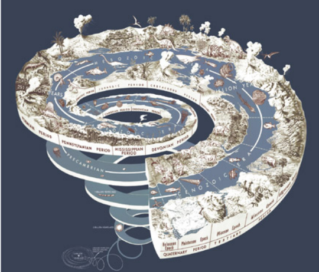

Student for Students
Welcome to Life Through Lenses! The site you are perusing now was founded by a Biology aficionado who wishes to share the magic she sees in Biology to fellow 9th Grade students. We are dedicated to providing accounts of selected lessons in an effort to share knowledge about our existence. Explore our world of wonders and cats here!

A Tour of This World
Unifying Themes in the Study of Life

(Charlaine among the poppies, 1900)
Evolution
(Graham, et al., 2008)
Microscopy

(alamy, N.D.)
Classification of Living Things

(Linnaeus, 1735)